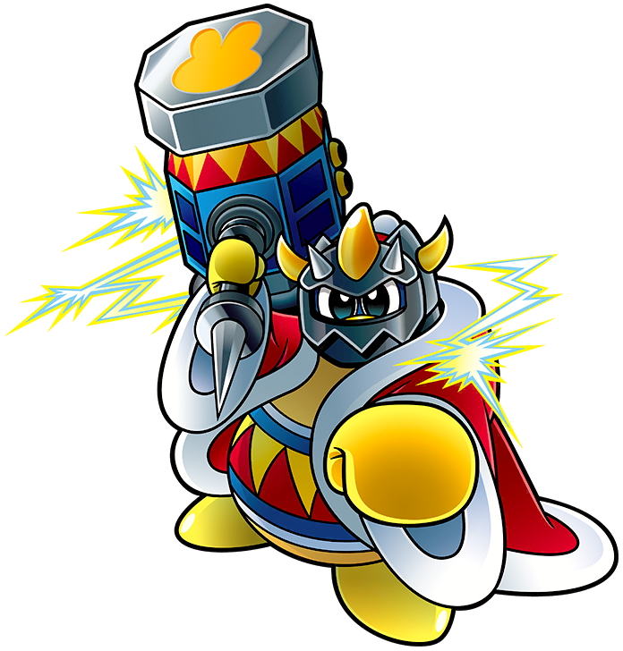

|
A giant robot made in the King of Dreamland's image. Sporting a floating spherical body, left crank, right spiked mallet, missile launchers (not shown), and a large laser in its torso (hidden), the Dededestroyer Z is just one of many robo-Dededes of various designs. |
Kirby Battle Royale |
 |
Falling into the Forgotten Land has turned this King Dedede to the wild side. Under the control and influence of the Beast Pack and Fecto Forgo, this king has traded mental for physical capabilities, now able to swing large stone pillars with ease, summon meteors on command, spread lava below his feet, and inhale much better than Kirby can. |
Kirby and the Forgotten Land |
|  |
Numerous battles with Kirby, all ending in loss, has driven King Dedede to the absolute max. Masked Dedede is his more powerful alter ego, wielding but a mask and a rocket hammer. His new hammer is able to spit fire and launch mini-missiles, and the rocket thruster lets him hammer spin much longer and much faster than normal. This King Dedede is not holding back. |
Kirby Super Star Ultra |